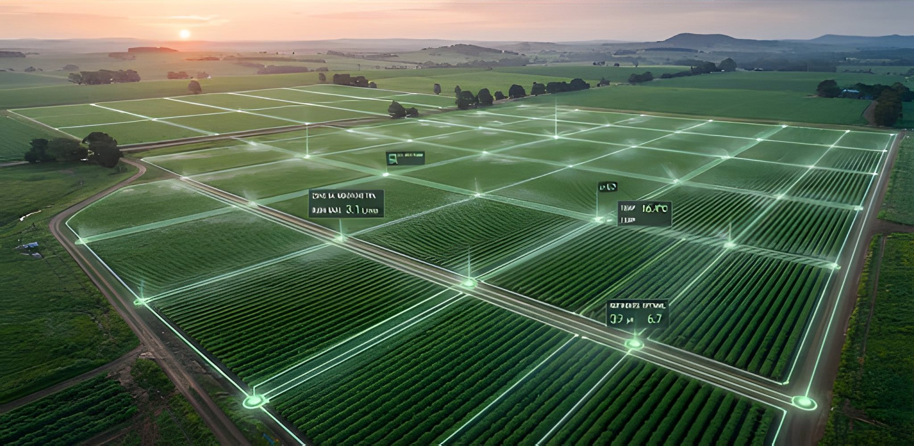
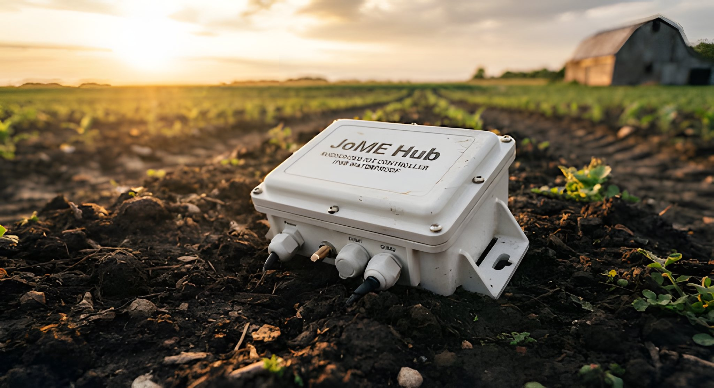

Cultivate smarter with JoME — the autonomous irrigation system that listens to your soil and maximizes your yield.

Less water used, with irrigation timed to what the soil actually needs.
Higher yield from nutrients delivered where and when crops need them.
Farms connected and managed from a single system.
01 — Our capabilities
Modular IoT and AI solutions designed for the modern farm. Monitor, analyze, and automate your entire operation.
Detect diseases before they spread with computer vision. Our AI scans leaf patterns to identify early signs of stress.
02Deliver minerals and nutrients precisely when needed, based on real-time soil composition analysis.
03Control your irrigation systems from anywhere via the cloud. Full redundancy even in low-connectivity zones.

02 — Philosophy
We build tools that feel as rugged as the hardware you deploy — intelligent precision, without the fragility.Meet your digital agronomist →